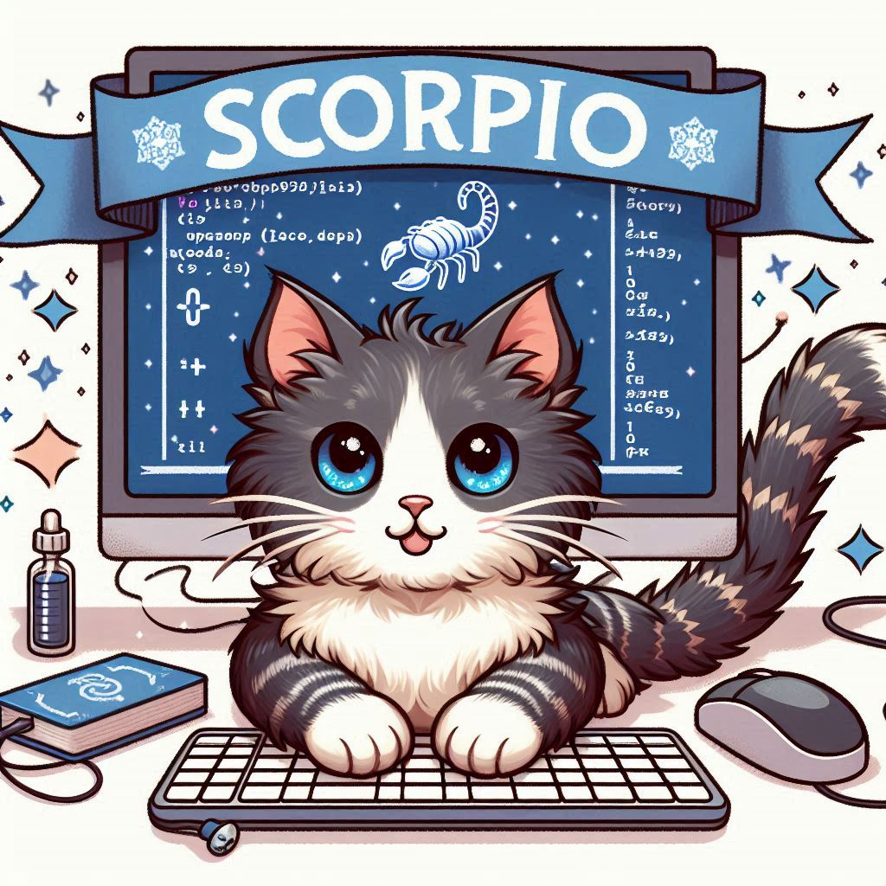

This month, your passion and intensity will drive you to new heights in your coding endeavors. As a
Scorpio, your determination and resourcefulness make you a formidable force in the world of
programming.
Your coding projects may require you to dig deep and tap into your resilience, but trust in your
ability
to unearth solutions that others might overlook. Embrace a methodical approach to debugging and
testing,
and you’ll uncover innovative answers to complex problems.
Learning and Development
This month is ideal for exploring new programming languages or technologies. Dive into online courses and
tutorials to broaden your skill set. Your natural curiosity and depth of focus will help you quickly
master
new concepts and apply them effectively.
Personal Growth
Your persistence and intensity will be your greatest assets in your coding projects this month. As a
Scorpio,
you are known for your unwavering commitment and ability to tackle challenges head-on. Stay focused and
trust in your problem-solving skills to navigate any obstacles.
Collaboration will be crucial this month. Working with others can lead to breakthrough ideas and
solutions.
Don’t hesitate to share your insights and seek feedback from your peers.
While you immerse yourself in coding, remember to take breaks and prioritise self-care. Balancing work
with
relaxation will help you maintain your productivity and creativity. Incorporate mindfulness practices or
short walks into your daily routine to stay refreshed.
Career
Your career in coding is set for significant progress this month. Your dedication and strategic thinking
will catch the attention of colleagues and superiors. Seize opportunities to lead challenging projects
or mentor junior developers. Your ability to see the bigger picture and your knack for problem-solving
will position you as an invaluable asset in your workplace.
Lucky days for coding: 8th, 15th, 23rd
Power color: Deep Red
Embrace the challenges and opportunities that come your way this month, and let your coding skills shine
bright!